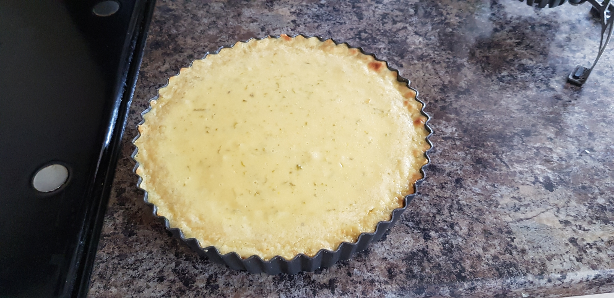

Easy Key Lime Pie

A deliciously sweet, sour, and limey treat. It couldn't be simpler to make!
And here's a fun fact: key lime pies were originally an easy, no-bake treat for ship crew, who used what limited ingredients they had; canned milk, gram crackers, and limes!
Ingredients:
- Five limes
- (Ideally key limes, if you can get them!)
- 400g digestive biscuits
- 200g salted butter
- One can of sweetened condensed milk, or about 300g
- Three medium egg yolks
Optional:
- 300ml double cream
- One tablespoon of icing sugar
- Extra lime zest, to decorate
Instructions
- Heat the oven to 160C/fan 140C/gas 3.
- Whizz 400g Hob Nobs to crumbs in a food processor (or put in a strong plastic bag and bash with a rolling pin).
- Mix with 200g melted butter and press into the base of a loose-based tart tin. Bake in the oven for 10 minutes. Remove and cool.
- Whilst waiting for the base to heat, grate off the zest of your five limes, then squeeze the juice out of them. Set aside.
- Put 3 medium egg yolks in a large bowl and whisk for one minute.
- Add condensed milk and whisk again for three minutes.
- Add the lime zest and juice and whisk for another three minutes.
- Pour the filling into the cooled base then put back in the oven for 15 minutes. Cool then chill for at least three hours.
- For an optional accompaniment, softly whip together 300ml double cream and 1 tbsp icing sugar.
- Dollop or pipe the cream onto the top of the pie and optionally finish with extra lime zest. Serve cold.